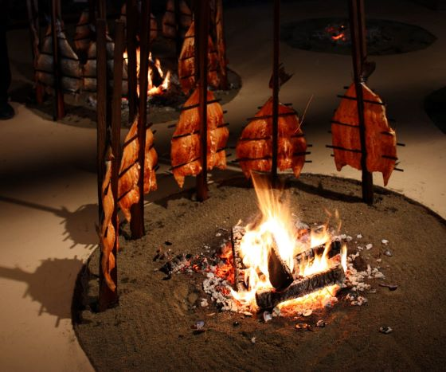

Indigenous Foods
Target Children and Youth
We created YouTube videos and Podcasts to talk about Indigenous Foods and how it has changed.

We created YouTube videos and Podcasts to talk about Indigenous Foods and how it has changed.
My Greatest Accomplishment
By Tutuhsuhtaaqsa Thomas
It was April 30, 1995 at 8 am on an early Sunday morning. I had organized for a group of our Adult Basic Education (ABE) class to participate in this year’s Garden City 10 k run. I do not even recall the group name we registered under.
My mother and daughter were supposed to come and watch me, support me that day. But they both slept in, so I just ended up catching the bus downtown by myself that day.
The run started approximately at Yates Street and Cook Street. There was over 2000 participants in this run.
I started to walk with this friend of mine. My back was aching that morning, as though I stretched a muscle in my back. Anyways, my friend and I were just walking and talking. It was an absolutely beautiful morning that day.
Not too long after we started walking, my friend said to me, “Okay well I’m gonna start running, catch ya later!” And I thought to myself, “Well I’m not going to walk this whole thing, by myself. So, I said a quick prayer to myself, “Dear God, please take care of my back, thank you.”
And then I started to trot.
I would keep telling myself, “Just keep your legs moving”
“You’re doing a great job!”
“Thank you, God, for giving me the ability to do this, run, my legs, and so on”
5 Km Mark
There were people on the sides of the streets cheering for people. Before you know it, I am at the 5-k mark. I thought to myself, “Wow, I give myself permission to stop anytime after this!” I did not train for this. I mean I did jog, but no more than a mile or two usually.
Coming down Cook street and heading towards Dallas Road was breathtaking, as you could see Olympic National Park. Someone gave me a small cup of water. I took sips because I was jogging and breathing heavily at this point.
7 Km Mark
I was amazed when I passed the 7-k mark. Again, I gave myself permission to stop anytime now. By now I’m along Dallas Road and there are yet more people clapping to runners, telling them “You’re at the 7-k mark, only 3 more kms to go!”
2 Km to Go!
I kept thinking to myself if I make it to 8, I’ll see if I feel like stopping, then I will. I made it to 8 k and the volunteers kept saying, “Only 2 more kms to go! You can do it!”
9 Km Mark
Now I’m by the Breakwater and approaching the 9-k mark. I am barely moving. I mean old people were passing me. People who were speed walking were passing me.
I told myself, I don’t care if they are passing me. I’m not trained for this. Just keep your legs moving I’d tell myself. Your doing a great job Tracey! You can stop anytime now!
At one point I had to acknowledge to my body that I had a cramp in my tummy. And then I said to myself, “I am not going to focus on you.” I took a deep breath and let it out slowly.
Final Stretch
Before you know it, I am in the final stretch. I had this overwhelming sense of euphoria come over me, in my chest, in my mind. I passed the finish line.
I don’t even recall what street we finished on. I think we were by the Legislature buildings because I recall walking for a bit to keep myself from stiffing up and I was walking on grass. I vaguely recall a statue of some sort. My legs felt like rubber once I finished.
I wanted to celebrate. So, of all idiotic things, I lit up a cigarette that I no doubt bummed from someone on the street. I felt a huge sense of accomplishment, only there was no one there to congratulate me or tell me I done a great job!
Conclusion
I recall for the next two days being really sore and tired and having to soak my legs in the tub. That was the last time I ever went jogging again. I always remember this as one of my greatest accomplishments in life because it shows my determination. I encouraged myself. I thanked the Creator the whole time I was running.
Resources
https:www//racestats.org/?Race=234&Tab=Table
Podcast Section.
Kimthaqsa's Instagram